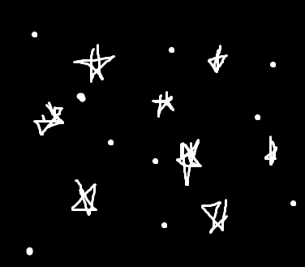

Info
Ma õpin TTHKs, minu hobby on arvutimängud
Pildid

Noorem tarkvaraarendaja
Noorem tarkvaraarendaja põhitegevuseks on uute tarkvarade ja veebilahenduste loomine, testimine ning dokumenteerimine. Ta tegeleb tarkvara analüüsi, disaini, programmeerimise, testimise ja juurutamisega. Noorem tarkvaraarendaja töö eeldab analüütilist ja loovat tehnilist mõtlemist, pidevat kutsealast enesetäiendamist ning head meeskonnatöö oskust.
Noorem tarkvaraarendaja erialal õpitakse: programmeerimise aluseid ja programmeerimist, tarkvara arendusprotsessi, agiilsed tarkvaraarenduse metoodikaid, andmebaasisüsteemide aluseid, veebirakenduste loomise aluseid, tarkvarasüsteemide testimist, hajusrakenduste aluseid, infotehnoloogia juhtimist ja rakendamist organisatsioonides jpm.